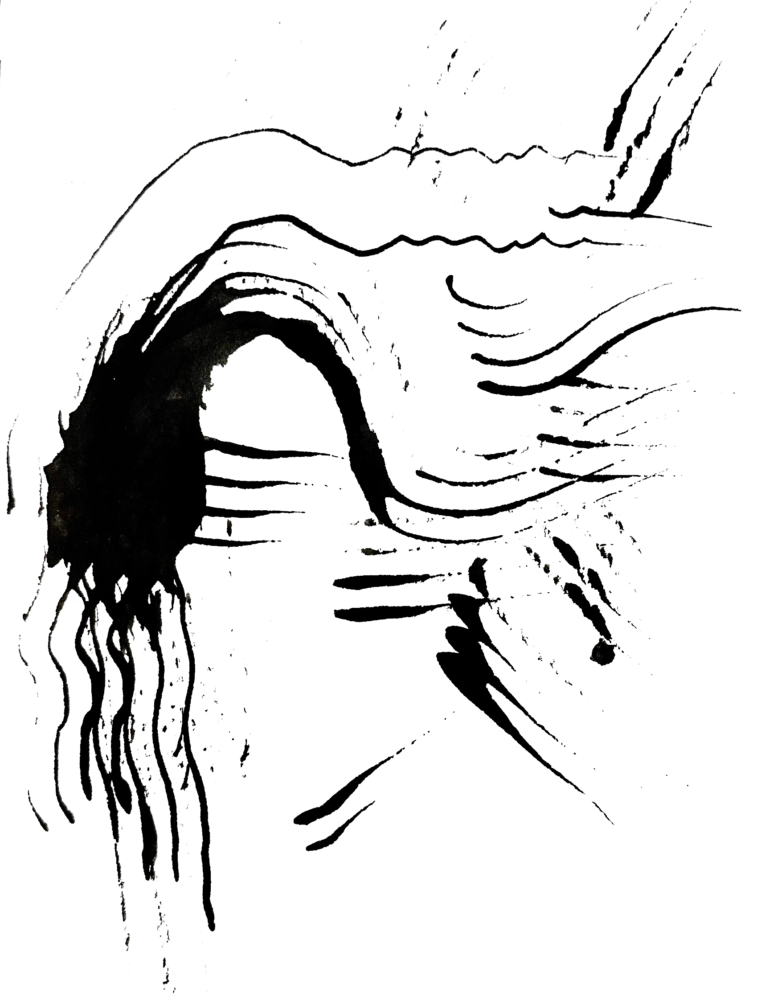

1
2

3

4

5

China - Red
"Red is a lucky color for celebration. People wear red clothes and decorate their homes with the color for New Year's Eve, and it's also the color for traditional weddings in the past."
Singapore - Green
"We are a tropical island country in SouthEast Asia, our city is also known as a 'garden' city for our urban landscape that combines with nature."
Netherlands - Blue & White
"Represents delftware pottery which features intricate blue and white designs. Also appears on the Dutch flag along with red."
United States - Blue
"I feel like it represents blue collar workers and the work ethic that comes with living in the United States."
China - Red
"National flag🇨🇳"
Thailand - Gold
"It's used in a lot of our traditional architecture like in temples and palaces but also in our traditional clothing. Nowadays you don't really see it much anymore but it's the only color that comes to mind."
Japan - Navy Blue
"I feel like the many aesthetics/traditions we have in japan, have a somewhat more quiet, modest way of thinking or expressing. This combined with the very strict mindset to always follow the rules makes me think the deep navy blue color is a good match to represent them."
United States - Blue
"I'm from Orange City, IA. There's so much blue in the dutch heritage, which is celebrated here. I think of blue Tulip Costumes and the blue and white delft pottery that is often seen around town."
South Korea - The five cardinal colors (Obangsaek)
"The Five Cardinal Colors (Obangsaek) represent Korea's traditional philosophy of balance and harmony. Each color symbolizes directions, elements, and virtues, reflecting the deep connection between nature and human life. This system is widely seen in Korean culture, from traditional clothing to architecture."
Sweden - White
"Because of the different seasons we have, mostly because of the contrast between each season."
China - Red
"Red contains all the efforts from our precursors and ancestors. It is meaningful."
United States - Mossy green
"I'm from Austin Texas, which is know as the "hill country" and I would spend most of my days outside around rivers and lakes."
Korea - White
"We have a deep history of following the Confucian ideals, which highlights humanity, righteousness, purity, and courtesy. That’s why we were called "white-clothes nation" historically."
Italy - Green
"It represents my favorite Italian seasoning basil!"
Japan - Light Green
"Reflects feelings of peace, harmony, and subtly which I feel is center to Japanese culture!"
Canada - Blue
"It feels like Toronto's weather is so cold, and often cloudy and rainy. Many of my memories are of nature, especially being around the lake a lot when I was on the varsity dragon boat team. The distances between buildings are also a bit far away from each other, and I can see the sky all the time."
India - Orange
"Indians love their bright, warm, festive colours and it’s a part of our flag."